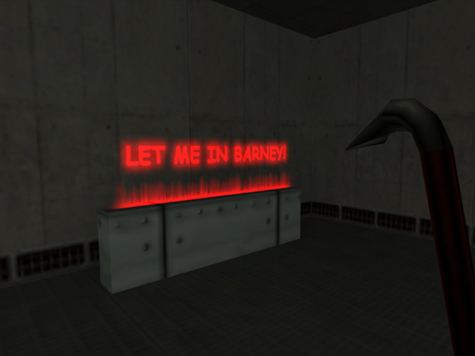

1) Additive transparent textures do not require any special texture characters nor, specific palette colors. All you need to do is make a simple texture as in PART1 but thinking in terms of additive light. The "additive" effect is controlled in hammer.
2) Begin by creating a new document with a black fill (in additive, black is transparent and anything else appears as light). Create your additive texture using the same methods as in Part1
3) Just like Masked, you have to put your texture on a func_wall or func_illusionary brush entity in order to get the effect to work. Set your render mode to "additive", then set the "renderamount" to "255" (or less for a less intense effect)
4) As seen here the effect is better when in a darkened area. With this method you can make light shafts, neon signs, lensflares, and other imagery. This is very useful for glowing space consoles too.
